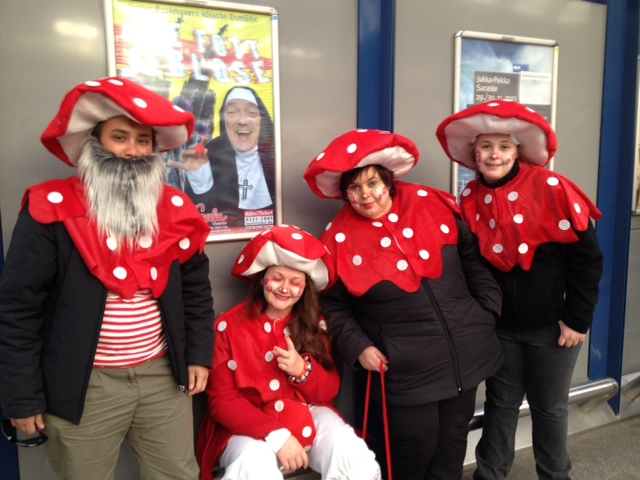

Curriculums at the University of Applied Sciences Cologne:
things,
that never to be done twice ;-)
Christian Noss
Designer
Managing Partner of Klickmeister GmbH Essen
Christian Noss
University of Applied Sciences Cologne
Head of Bachelor Programme Computer Science and Media
Web fan!
Kölner Dom & 1.FC
& Karneval & Kölsch

Older Study Programmes
Fundamental Questions
Latest Study Programme
Course and teaching concepts
Bachelor & Master Programme
Computer Science and Media
Campus Gummersbach // Faculty 10 // Engineering and Computer Science
Bachelor Progammes 1200 students
Business Informatics // Technical Computer Science // General Computer Science // Computer Science and Media
Four programmes // one core
|
Computer Science and Media Media Production, Visual Communication, Web-Technologies, HCI, Computer Graphics ... |
Business Informatics ... |
General Computer Science ... |
Technical Computer Science ... |
|
Core Mathematics, Programming Basics, Theoretical Informatics, Operating Systems, Distributed Systems, IT-Law, Business Administration, Ethics, Network Technology | |||
Why that?
Bachelor Progamme
Computer Science and Media 380 students // 3 years
Drop-off rate 35%
Standard period of study 10%
:-(
BA Computer Science and Media
Goals
BA Computer Science and Media
Occupational Fields
Master Progamme
Computer Science and Media 50 students // 2 years
Drop-off rate 5%
Standard period of study 40%
:-)
MA Computer Science and Media
Goals
MA Computer Science and Media
Occupational Fields
Computer Science and Media
Fundamental Questions
or challanges
Different programmes, different goals
How to align the core courses to the programmes goals?
Academic Freedom // Course Coordination
How to manage the dependencies between single courses?
Especially if they build upon one another?
Curriculum Strategy
Generalists vs. Specialists
Curriculum Strategy
Daily Work
How to provide the software, devices, servers and other stuff?
the next step?
Master Progamme
Webscience 40 students // 3 years // Occupational degree course
new
MA Webscience
MA Computer Science and Media
Background of the students
MA Webscience
Module Concept
| Foundations & Principles I: Web Elements | 12 CP |
| Foundations & Principles II: Strategy & Marketing | 12 CP |
| Web Trust & Security | 12 CP |
| Decision & Management | 12 CP |
| Web Law | 12 CP |
| Social Issues in Web Applications | 12 CP |
| Design | 12 CP |
| Web Project Development | 24 CP |
| Masterthesis + Kolloquium | 24 CP | 120 CP |
MA Webscience
Course Concept, e.g Foundations & Principles I: Web Elements
| Web Architectures | 3 CP |
| Design Basics | 3 CP |
| Introduction to Web Science | 3 CP |
| Quality Management for the Web | 3 CP |
| Web Metrics / SEO | 3 CP |
| HCI Basics | 3 CP |
| Final Exam | 12 CP |
MA Webscience
Course Concept, e.g Design
| Interaction Design | 3 CP |
| Designing for the Web | 3 CP |
| Corporate Design | 3 CP |
| Media Production | 3 CP |
| Project or Advanced Seminar | 6 CP |
| Final Exam | 12 CP |
MA Webscience
Organizational Concept, Modules
| Gerhard | Foundations & Principles I: Web Elements |
| Jan | Foundations & Principles II: Strategy & Marketing |
| Hans-Ludwig | Web Trust & Security |
| Jan | Decision & Management |
| Hans-Ludwig | Web Law |
| Marion | Social Issues in Web Applications |
| Uwe | Design |
| Kristian | Web Project Development |
| Advisory Board | Masterthesis + Kolloquium |
MA Webscience
Organizational Concept, Courses
| Gerhard | Web Architectures |
| Tobi | Design Basics |
| Gerhard | Introduction to Web Science |
| Barbara | Quality Management for the Web |
| Tom | Web Metrics / SEO |
| Tom | HCI Basics |
| Gerhard | Final Exam | 12 CP |
MA Webscience
Teamteaching
| Gerhard | Foundations & Principles I: Web Elements |
| Jan | Foundations & Principles II: Strategy & Marketing |
| Hans-Ludwig | Web Trust & Security |
| Jan | Decision & Management |
| Hans-Ludwig | Web Law |
| Marion | Social Issues in Web Applications |
| Uwe | Design |
| Kristian & Marion | Web Project Development |
| Kristian | Masterthesis + Kolloquium |
What are the benefits?
What are the benefits?
What are the benefits?
What are the benefits?
Better coordination between single courses.
The concept provides a structure for more transparency and for more communication between the professors.
A few Teaching Concepts
we are using :-)
Teaching Concepts // Traditional
Teaching Concepts // Semi-Traditional
Teaching Concepts // Traditional
Teaching Concepts // The Hidden Star
Teaching Concepts // Advanced
Teaching Concepts // Developer Stype
Thank you for listening!
Use a spacebar or arrow keys to navigate